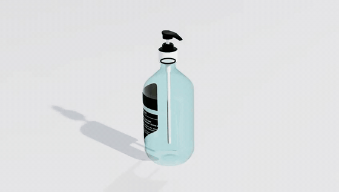
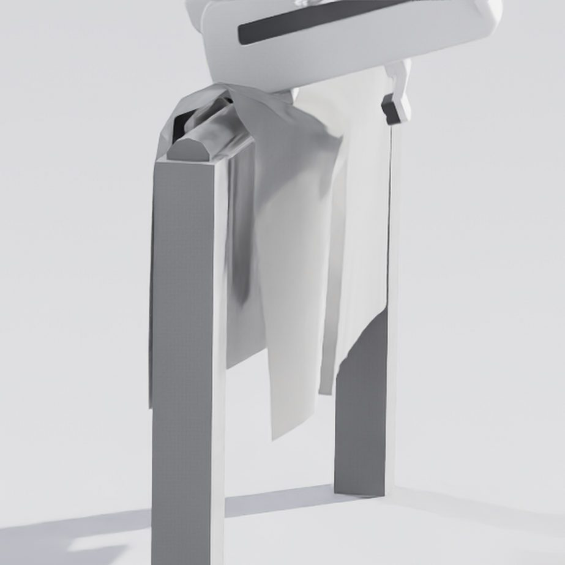
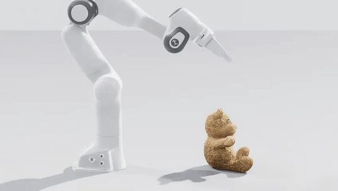
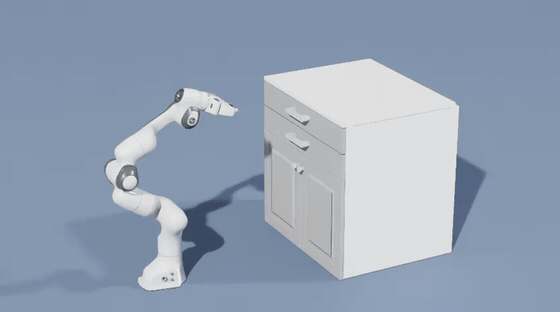

The document specifies an ontology, the SOUL reference architecture, measured household reference clips, and an evaluation program with falsification criteria for each thesis. It reports no benchmark results.
Open Isaac Sim, MuJoCo, Unity, or Unreal and import a cube. The workflow has been stable for decades. The cube receives mass, friction, restitution, roughness, luminosity. Those scalars are handed to one global solver that applies uniform physics to every body it steps. Interaction is whatever falls out of the solve. The object contributes parameters. Consequences are derived centrally.
That stack is a genuine achievement. Our question is architectural only: must all understanding of behavior live in one central solver, or can it be distributed across coordinated agents, one per object, each responsible for its own?
Under the agentic ontology, a book is not a mesh with a mass. It is an agent that knows how to be a book: rest, open, flutter in wind, fall, thud, settle. A vase knows how flowers ruffle as air speed rises. A sanitizer bottle knows that a press on its cap dispenses a small, slightly variable volume with a pump click. A lamp knows its switch. None of these facts need to be consequences of a global solve. They are behaviors: entries in a charter, enacted on demand, negotiated in context.
Two paradigms
The paper contrasts the uniform-physics paradigm with an agentic one. On the left, passive assets feed a global solver. On the right, objects, fields, and the environment itself are agents that exchange typed messages, with a Director arbitrating thinly.
Figure 1 · Topology
Uniform physics
Passive assets send parameters to one solve. Intelligence is central.
Agentic
Every object is an agent. Solid arrows are messages. Dashed lines are thin arbitration.
Three theses
The argument rests on three claims. Each is paired with a named experiment in the evaluation program that can falsify it.
Thesis 01
Behavioral sufficiency
For robot learning, the fidelity target is a distribution over task-relevant behavior, not a petal-exact trajectory. The flowers must ruffle; fine-grained petal paths are not required.
Thesis 02
Language as medium
Speech-act protocols finally have interlocutors that understand. Agents propose, commit, and negotiate interaction semantics in natural language grounded by soul files.
Thesis 03
Societies scale
Solvers grow with every awake body. Societies escape through locality and amortization: negotiate once, then replay from cache as novelty decays.
Soul, senses, skills
The ontology’s triad is simple. Every object has a soul (a natural-language charter of identity, personality, repertoire, and limits), senses (a sensorium in its own form), and skills (behaviors over its own degrees of freedom). An object with all three is, functionally, a robot.

Soul
A versioned charter: what the object is, what it can do, and within what physical limits. Authorable in natural language rather than through solver-parameter search.
Senses
Not every agent needs eyes. The bottle reads pressure on its pump. The lamp reads its switch. Delivery is filtered by what the sensorium can receive.

Skills
Named, parameterized stochastic behaviors. Flutter, dispense, toggle, ruffle, thud. Sampled from distributions, compiled after negotiation.
Figure 2 · At a glance
Clock, arbitration, invariants. The environment as an agent.
Soul
Charter, personality, limits. Authorable in language.
Senses
Tactile, kinematic, geometric. A sensorium of its own.
Skills
Flutter, fall, thud, yield. Named behaviors over its degrees of freedom.
Negotiation
PROPOSE, COMMIT, compile to cache. Once, not every timestep.
One-way mirror. The learning agent sees pixels, forces, and sound. Never a message.
Negotiate once, enact forever
Language is the compiler of the world’s dynamics, not its interpreter at every timestep. Novel interactions are negotiated on a slow cognition plane, then compiled into cheap stochastic processes on a fast enactment plane. As the interaction cache fills, language-model invocations per simulated second decay toward zero.
Cognition plane
Speech-act negotiation with an LLM. PROPOSE, COMMIT, validate, compile. Rare, expensive, and reusable.
Enactment plane
Cached behavior programs at simulation rate. Trajectory generators and event emitters. No language model on the hot path.
Figure 11 · SOUL
The one-way mirror
The robot being trained is an agent in the world, but not a member of its backstage. It perceives rendered pixels, depth, proprioception, and contact forces. It never reads souls or messages. The message plane has no counterpart in reality. A policy that conditioned on it would break at deployment. Isolation is architectural.
Backstage
Souls, speech acts, negotiation, Chronicle, Director arbitration. Visible to experimenters and to object agents. Invisible to the learner.
Learning agent
Sees only what a real robot could see. Acts only through actuators. Privileged curriculum guidance, if used, is distilled away before deployment.
What the footage says
Part II of the paper works ordinary household objects as case studies: sanitizer bottle, table lamp, cabinet drawer, deformable teddy bear, and cloth. Measured clips fix reference behaviors the system must reproduce. Authored souls and negotiations show how those behaviors are declared. No result about the built system is claimed as a benchmark.
Sanitizer bottle
Measured actuation. Behavior is compact: press, dispense, click, recover.
Table lamp
Switch toggles luminous state. The light field agent responds. A simple discrete mode with graded appearance.
What they said to each other
The Chronicle records every speech act in Lamport order. Peach is the object. Lavender is the arm. Grey lines are the runtime. Each episode is one language call that binds one process. The clip sits on the negotiation it produced.

Chronicle · teddy lift-20260918-200438
The bear and the arm
Model sonnet. Compiled 18 September 2026, 20:17 UTC. Seed teddy-lift-001.
SENSE, INFORM (GRASP) standoff-1 · Lamport 1 · five sites; limb 45 mm; torso 137 mm; surface friction 35.0; mass 0.1 kg; stiffness 15,000 Pa
Bear · obj.teddy_bear_01 · initiating
PROPOSE (GRASP)
Here are the places you can take me: left foreleg, right haunch, head crown, left ear, torso waist. Thicknesses 45.0, 44.9, 55.5, 32.9, 137 mm. Approach from above. I am not closed yet.
limb thickness 0.045 m · torso 0.137 m · collision fidelity 0.085
Arm · obj.franka_panda_deformable_01 · responding
COMMIT: Move
I ran the five sites in order. Torso waist at 137 mm against my 81 mm open span is arithmetic, not judgment. Struck. The other four all solve to residuals near 0.1 mm.
SENSE, INFORM (GRASP) grip-1 · Lamport 5 · plush close true: the bear asks to be held
Bear · initiating
PROPOSE (GRASP)
Pads are down. Close.
Arm · responding
COMMIT: Move
Head crown and right haunch offer more contact. The posture set I actually have numbers for is the 45 mm limb. I will not invent joint angles for a site I was not given a solution for.
Arm · initiating
PROPOSE (GRASP)
Chosen site: right haunch. Grip width 7 mm. Gap 14 mm. Effective friction 18.5. Support 281.
site thickness 0.0449 m · band overlap 0.0387 m · site confidence 0.55
Bear · responding
COMMIT: Yield
The gap is fourteen millimetres on a limb of 44.9. That is a deep bite, not a graze, and it is not my waist. Magnitude stays at zero. Consent is not a push. I will not fight a hold that has already caught me.
Arm · responding
COMMIT: Ease
Sag is 36 mm on a 45 mm limb. Recovery is 0.0002. I will not take your 0.085 m/s. I take this up at about 0.045 m/s so the shear rate stays low. The failure I am guarding against is peeling, not slip.
Bear · responding
COMMIT: Flop
Released is released. I do not supply the fall. Magnitude stays at zero. What I bind is duration: a toy that stops dead the instant it lands reads as a prop.
Teddy marks the hard boundary: escalate to a solver where task reward depends on dense contact.

Chronicle · franka drawer-20260913-194902
The cabinet and the arm
Nine language episodes. Peach is the cabinet. Lavender is the arm. The drawer travels 0.400 m.
Arm · obj.franka_panda_01 · initiating
PROPOSE (PULL)
Grip width 7.9 mm. Interference 4.0 mm. Pull 0.167 m/s. Off-axis 4.3 mm. Reach margin 0.093 rad.
Cabinet · obj.sektion_cabinet_01 · responding
COMMIT: Yield
Off-axis is 4.3 mm against a 14 mm squareness tolerance. This is a square pull. I yield at zero magnitude: consent that a well-gripped pull will find my rails willing for the whole 400 mm, not a promise I am about to move myself.
SENSE, INFORM (PULL) follow-2 · drawer open 0.2 of 0.4 m
Arm · responding
COMMIT: Move
Half of travel. I drop w3 and w4 rather than spend joint travel I was not asked to spend. Fingers in holding at 5.0 mm, 6.9 mm of interference.
SENSE, INFORM (PULL) follow-3 · drawer open 0.3 of 0.4 m
Arm · responding
COMMIT: Move
Three quarters of the rail. I scale the holding-to-w4 joint deltas to 75 percent and keep the original spacing, denser near the end. Final shoulder -1.575 rad, clear of the limit.
Arm · initiating
PROPOSE (RELEASE) then COMMIT: Move
The drawer sits open 0.4 m. Residual load 4 N. I reopen the fingers at 35 mm only after the joints have already stopped.
ENACT release-1 · end of Chronicle · 18 episodes, 45 messages, vetoes 0, escalations 0
Stick, slide, stop. Behavior that today requires solver-parameter search becomes a paragraph in a soul.
A single escalation rule
Trajectory-level physics is not retired. It becomes a budgeted resource. Ambient content can run hot: any plausible ruffle is a correct ruffle. Task-critical contact runs cold. Escalation collapses the distribution to a solver island for the duration of criticality. Physics where it matters. Behavior everywhere else.
Evaluation program
Every thesis has pre-registered success targets and falsification criteria. The Ruffle Test asks whether agentic worlds are indistinguishable in distribution from real or solver references at behavior level. Authoring, amortization, transfer, grounding, and openness are specified the same way.
Evaluation
Program at a glance
| Test | Targets | Falsification |
|---|---|---|
| E1 Ruffle Test | Behavioral sufficiency | Reliable detection; discriminators fail to stay near chance |
| E2 Authoring | Editability in few turns | Parity with expert parameter tuning |
| E3 Amortization | LLM cost decays with cache | Sustained cognition cost or rising artifacts |
| E4 Transfer | Policies trained in agentic worlds | Systematic deficit versus solver baselines |
| E6 Grounding | Souls as priors pinned by footage | Grounded models no better than prior out of sample |
Scope of the claim
We do not claim language-mediated behavior matches solver physics at trajectory level. We claim that at behavior level, agentic worlds can be made indistinguishable in distribution for broad classes of everyday interaction; that policies trained in such worlds can transfer no worse where behavioral richness matters; and that the cost of a populated, authored world falls as negotiation amortizes into playback.
Conclusion
The uniform-physics stack asks one solver to understand every object. That is the right default for contact that must be true at trajectory level. It is the wrong default for the rest of a household: the book that flutters, the bottle that clicks, the drawer that yields, the bear that compresses. Those are behaviors. They belong to the object.
The agentic ontology makes that assignment explicit. Every object carries a soul, senses, and skills. Novel interaction is negotiated once in language, compiled into a cache, and replayed. Physics remains as a budgeted island when a commitment is not enough. The learning agent never sees the conversation. It sees pixels, forces, and sound.
We have specified the ontology, the SOUL architecture, measured reference clips, and the tests that would falsify the three theses. We have not reported those tests. That is the next work: author souls, negotiate, enact, and ask whether the resulting worlds are sufficient for robots that must act with care.
If they are, a populated world becomes cheaper as it becomes more familiar, and a machine that understands the objects around it is easier to keep predictable around people. That is the view of the field this program is meant to serve.